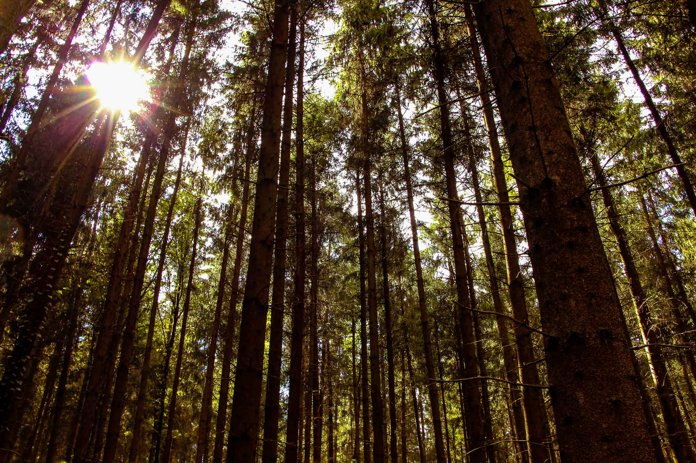

Kontakt
Kategorien
Start
Kontakt
Kategorien
Start
Kommen wir zu einer der vermutlich am meisten verbreiten Kategorien der Fotografie.
Fast jeder der eine beeindruckende Landschaft vor sich sieht, hat früher oder später das Bedürfnis sein Smartphone zu zücken und ein Bild davon zu schießen.
Doch um wirklich beeindruckende Bilder zu schießen braucht es schon etwas mehr.
Allerdings ist hier die Ausrüstung glücklicherweise deutlich weniger wichtig als in den anderen Kategorien.
Schnapp dir einfach eine Kamera und ein Objektiv und leg los.
Viel wichtiger ist es, kreative Blickwinkel und Bildausschnitte zu wählen.
Scheue Dich also nicht, Dich auch mal auf den Boden zu legen oder Dich anderweitig zum Affen zu machen.
Allgemein sollte es Dir beim fotografieren egal sein, was die Leute um Dich herum denken.
Hauptsache Du hast die Gelegenheit ein tolles Bild zu schießen.
Deiner Kreativität kannst Du hier auf jeden Fall freien lauf lassen.
Probiere gerne auch alle möglichen Brennweiten aus.
Jeder hat in seinem Leben schon tausende Weitwinkel aufnahmen von Landschaften gesehen, daher greif doch einfach mal nach einem Tele-Objektiv.
Viel mehr gibt es für mich hier nicht zu sagen. Du bist gefragt, gehe raus und probiere einfach alles mögliche aus.
Denn das ist es worauf es beim fotografieren ankommt.
Viel Spaß dabei!
